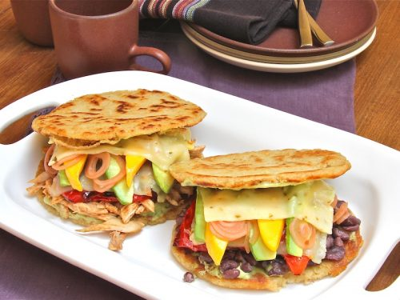

AREPA

El alimento de los dioses, thor maracucho se lo come en la mannanas cuando se para enfierrado
ingredientes
- 2 ½ cups lukewarm water
- 1 teaspoon salt
- 2 cups pre-cooked white corn meal (such as P.A.N.®)
- ¼ cup vegetable oil, or as needed
Pasos
- El mio le pone la masa y el agua en un bowl
- bate esa mielda y hasle la forma con tus palmas como si jugaras con plastilina carajito
- Tira esa mielda en el budare
- Cocinala 15min y cometela con queso y mantequilla
Home
Soy la leyyyyyyyyyyyyyyyyyyyyyyyy